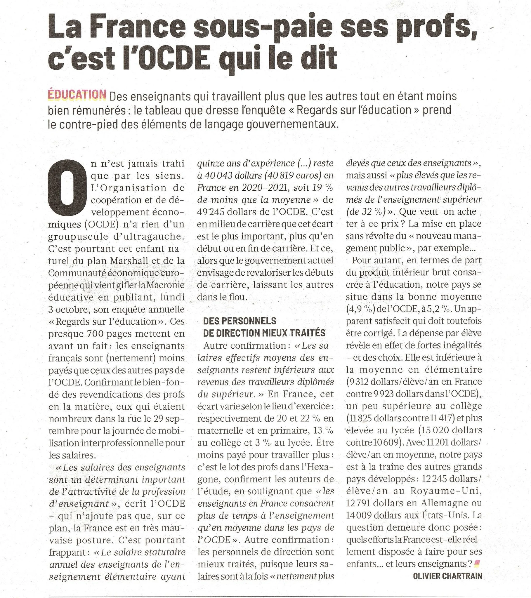

Publication d’archives
LA FRANCE SOUS-PAIE SES PROFS, C'EST L'OCDE QUI LE DIT.
Date indiquée par Facebook · 4 octobre 2022
Texte conservé avec la publication
Contexte du dossier
Le 20 mai, la page reproduit un article de Laurent Mouloud paru la veille dans L’Humanité. Les résultats d’admissibilité aux concours y servent d’alerte sur le recrutement pour la rentrée, avant les admissions définitives. L’auteur relie cette crise aux salaires, à la formation et à la progression de la contractualisation. Le 4 octobre, le relais d’un article d’Olivier Chartrain sur les données de l’OCDE remet la rémunération au centre du débat. Ces deux interventions ne décrivent pas un simple défaut de vocations : elles interrogent les choix publics qui rendent le métier moins accessible et moins attractif.

Sources
Archive rouge · export Facebook · AR-0002-FB-01847
À lire aussi · Le lycée professionnel n’est pas une réserve de main-d’œuvre